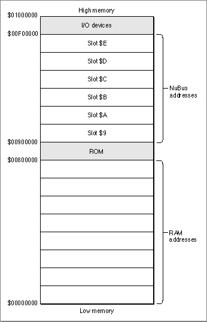
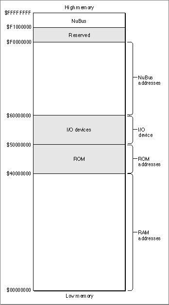
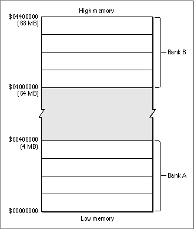

Legacy Document
Important: The information in this document is obsolete and should not be used for new development.
Important: The information in this document is obsolete and should not be used for new development.


About the Virtual Memory Manager
The Virtual Memory Manager is the part of the Operating System that provides virtual memory, addressable memory beyond the limits of the available physical RAM. The principal benefit of using virtual memory is that a user can run more applications at once and work with larger amounts of data than would be possible if the logical address space were limited to the available RAM. Instead of equipping a computer with amounts of RAM large enough to handle all possible needs, the user can install only enough RAM to meet average needs. Then, during those occasional times when more memory is needed for large tasks or many applications, the user can take advantage of virtual memory. When virtual memory is present, the perceived amount of RAM can be extended to as much as 14 MB on systems with 24-bit addressing and as much as 1 GB on systems with 32-bit addressing.The Virtual Memory Manager also provides a number of routines that your software can use to modify or get information about its operations. You can use the Virtual Memory Manager to
This section describes how the Virtual Memory Manager provides virtual memory. It also explains why you might need to use certain Virtual Memory Manager routines even when virtual memory is not available.
- hold portions of the logical address space in physical RAM
- lock portions of the logical address space in their physical RAM locations
- determine whether a particular portion of the logical address space is currently in physical RAM
- determine, from a logical address, the physical address of a block of memory
Virtual Memory
The Virtual Memory Manager extends the logical address space by using part of the available secondary storage (such as a hard disk) to hold portions of applications and data that are not currently in use in physical memory. When an application needs to operate on portions of memory that have been transferred to disk, the Virtual Memory Manager loads those portions back into physical memory by making them trade places with other, unused segments of memory. This process of moving portions (or pages) of memory between physical RAM and the hard disk is called paging.For the most part, the Virtual Memory Manager operates invisibly to applications and to the user. Most applications do not need to know whether virtual memory is installed unless they have critical timing requirements, execute code at interrupt time, or perform debugging operations. The only time that users need to know about virtual memory is when they configure it in the Memory control panel. One visible cost of this extra memory is the use of an equivalent amount of storage on a storage device, such as a SCSI hard disk. Another cost of using virtual memory is a possible perception of sluggishness as paged-out segments of memory are pulled back into physical memory. Performance degradation due to the use of virtual memory ranges from unnoticeable to severe, depending on the ratio of virtual memory to physical RAM and the behavior of the actual applications running.
There are two main requirements for running virtual memory. First, the computer must be running system software version 7.0 or later. Second, the computer must be equipped with an MMU or PMMU coprocessor. Apple's 68040- and 68030-based machines have an MMU built into the CPU and are ready to run virtual memory with no additional hardware. A Macintosh II (68020-based) computer can take advantage of virtual memory if it has the 68851 PMMU coprocessor on its main logic board in place of the standard Address Management Unit (AMU). (The PMMU is the same coprocessor needed to run A/UX.) Apple's 68000-based machines cannot take advantage of virtual memory.
Users control and configure virtual memory through the Memory control panel. Controls in this panel allow the user to turn virtual memory on or off, set the size of virtual memory, and set the volume on which the invisible backing-store file resides. (The backing-store file is the file in which the Operating System stores the contents of nonresident pages of memory.) Other memory-related user controls appear in this control panel. These include settings for the disk cache and for 24-bit or 32-bit Memory Manager addressing. If users change the virtual memory, addressing, or disk cache settings, they must restart the computer for the changes to take effect.
The virtual memory setting in the control panel reflects the total amount of memory available to the system (and not simply the amount of memory to be added to available RAM). Also, the backing-store file is as large as the amount of virtual memory. This backing-store file can be located on any HFS volume that allows block-level access. (This volume is known as the paging device or backing volume.) Because the paging device must support block-level access, users cannot select as the paging device a volume mounted through AppleShare. Also, users cannot select removable disks, including floppy disks, as paging devices.
The Logical Address Space
When virtual memory is present, the logical address space is larger than the physical address space provided by the available RAM. The actual size of the logical address space, and hence the amount of virtual memory, depends on a number of factors, including
- the addressing mode currently used by the Memory Manager
- the amount of space available on a secondary storage device for use by the backing-store file
- if 24-bit addressing is in operation, the number of NuBus expansion cards, if any, installed in the computer
24-Bit Addressing
When running with 24-bit addressing, the Memory Manager can address at most
224 bytes, or 16 MB. Of these 16 MB, at most 8 MB can be used to address physical RAM. The remaining 8 MB are devoted to ROM addresses, I/O device addresses, and NuBus slot addresses. Figure 3-1 illustrates the logical address space mapping used by the 24-bit Memory Manager.
Figure 3-1 24-bit Memory Manager logical address space
- Note
- In some Macintosh computers, the ROM is mapped to the address range $01000000 to $010FFFFF (indicated as belonging to slot $A in Figure 3-1). In these computers, the maximum amount of physical RAM is 10 MB instead of 8 MB. The remainder of this section describes the original layout of the 24-bit logical address space only.


When 24-bit addressing is in operation and virtual memory is available, the Virtual Memory Manager uses, as part of the addressable application memory, any 1 MB segments not assigned to a NuBus card. For example, if a Macintosh computer has three NuBus expansion cards installed, that computer can address at most 11 MB of virtual memory. The maximum amount of virtual memory possible in a 24-bit environment is
14 MB (that is, 8 MB of physical RAM + 6 MB of additional space previously reserved for the NuBus); this maximum is achievable only on a computer with no NuBus expansion cards installed.Notice in Figure 3-1 that addresses from $00800000 to $008FFFFF are reserved for ROM. In other words, the largest contiguous block of space that an application can allocate when virtual memory is available is somewhat less than 8 MB, even though the total amount of virtual memory available can be as large as 14 MB. The rest of the virtual memory can be in a contiguous block as large as 4 or 5 MB, unless the user has fragmented the NuBus space by making a poor choice of slots in which to install expansion cards. To maximize the amount of contiguous virtual memory, users should place cards in consecutive slots at either end of the expansion bus. A haphazard placement of NuBus cards may result in a number of 1 MB or 2 MB "islands" in the upper portion of the 24-bit address space; in general, this kind of fragmentation reduces the effectiveness of a large virtual address space.
- Note
- Some Macintosh computers have fewer than six NuBus slots, and the numbering of the slots is not consistent across different models. In a Macintosh IIcx, the three available slots are numbered $9 through $B, so expansion cards should be grouped toward the lowest-numbered slot (contiguous with the ROM space). In a Macintosh IIci, the slots are numbered $C through $E, so expansion cards should be grouped toward the highest-numbered slot (contiguous with the I/O space). However, the RAM-based video on the Macintosh IIci occupies addresses reserved for slot $B; as a result, it is impossible to avoid some degree of fragmentation of the virtual address space when you use the RAM-based video option on that computer.
32-Bit Addressing
When running with 32-bit addressing, the Memory Manager can address at most
232 bytes, or 4 GB. Of these 4 GB, at most 1 GB can be used to address physical RAM. The remaining 3 GB are devoted to ROM addresses, I/O device addresses, and NuBus slot addresses. Figure 3-2 illustrates the logical address space mapping used by the 32-bit Memory Manager.Figure 3-2 32-bit Memory Manager logical address space

- Note
- The fragmentation of the virtual address space that sometimes occurs when 24-bit addressing is in operation is never a problem when 32-bit addressing is in operation. In the 32-bit address space, virtual memory and the NuBus slots do not share space.
The Physical Address Space
The original versions of the Macintosh Operating System used physical addresses exclusively. A particular location in RAM could be accessed by its physical address, regardless of whether that address was generated by an application, by the system software, or even by a NuBus expansion card. In short, there was no difference between the logical and the physical address spaces.However, both hardware and software advances have forced the Operating System
to abstract the logical address space from the physical address space. As you have seen, the logical address space is larger than the physical address space when virtual memory is available. The Operating System uses the MMU coprocessor to map logical addresses to their corresponding physical addresses.In addition, some Macintosh computers have a discontiguous physical address space. For example, on a Macintosh IIci with 8 MB of physical RAM, the physical memory appears to the CPU and to the NuBus expansion bus as two separate 4 MB ranges
(see Figure 3-3). As you can see, the physical RAM occupies two separate ranges:
the RAM installed in bank A, ranging from $00000000 to $003FFFFF, and the RAM installed in bank B, ranging from $04000000 to $043FFFFF.Figure 3-3 The physical address space on a Macintosh IIci with 8 MB of RAM

In most cases, a discontiguous physical address space causes no problems, because the Operating System uses the MMU coprocessor to map the available physical memory into a single contiguous logical address space. All memory addresses returned to your application by the Memory Manager (for instance, when you allocate a new block by callingNewHandle) are logical addresses. When you read or write a logical memory address, the Operating System uses the MMU coprocessor to determine the physical address corresponding to your logical address. This address translation is completely transparent to your application. For example, if you read the system global variable located at address $10C, it doesn't matter that the CPU actually looks at the physical address $0400010C.In some cases, however, you can run into problems if you don't account for the possibility that the logical address space and the physical address space might differ. Suppose, for instance, that you are developing a driver that passes addresses to NuBus master hardware. In this case, you need to take care to pass it physical addresses only, because NuBus hardware does not use the MMU to translate logical addresses into physical addresses. If your driver passes a logical address, the NuBus hardware cannot translate it into a physical address because it does not have access to the MMU's address-mapping tables. If your hardware then attempts to write data to that address, it is likely to overwrite some other portion of physical memory.
To prevent this problem, you need to make certain that you always convert logical addresses to their corresponding physical addresses before you pass those addresses to any alternate bus master. You can do this by calling the
GetPhysicalfunction, as described later in "Mapping Logical to Physical Addresses," which begins on page 3-16. TheGetPhysicalfunction is implemented in ROM on all machines that have a discontiguous physical address space--whether or not virtual memory is available. Accordingly, before you pass addresses to an alternate bus master, you should check for the availability of theGetPhysicalcall; if it's available, you should use it to translate logical to physical addresses.
- Note
- Passive or slave NuBus cards (such as video cards) that do not read or write physical RAM are not likely to be affected by the presence of virtual memory or by a discontiguous physical address space.
Page Faults
When an application or other software component tries to access data in a page of memory that is not currently resident in RAM, the Operating System issues a special kind of bus error known as a page fault. The Virtual Memory Manager intercepts page faults and tries to load the affected page or pages into memory. It does so by executing its own internal page-fault handler, which handles page faults and passes other bus errors to the standard bus-error vector in low memory.To load the required pages into memory, the Virtual Memory Manager's page-fault handler takes over the SCSI bus and makes calls directly to the driver of the backing-store file. While the Virtual Memory Manager is handling a page fault, it is essential that no other page faults occur. If a page fault did occur during page-fault handling--a condition known as a double page fault--the Virtual Memory Manager would have to interrupt the driver of the paging device to make a further request to load the needed page. Unless the driver of the paging device is concurrent (that is, able to handle several requests at once), the driver cannot handle this second request. Unfortunately, current versions of most SCSI disk drivers are not concurrent. As a result, a double page fault results in a system crash.
The Virtual Memory Manager takes special steps to avoid double page faults caused by user code (that is, code that is not executed as the result of an exception). It defers all user code while the driver of the paging device is busy. In particular, the Virtual Memory Manager defers until a safe time the following types of code:
Other software components must take care not to cause page faults at interrupt time. In particular, device drivers, which commonly run at interrupt time, should make certain that any data structures or buffers that they reference at interrupt time are in physical memory at that time. You can make sure that this happens by holding the required data in physical memory, as described in "Holding and Releasing Memory" on page 3-14.
- Note
- Because these types of tasks may be deferred under virtual memory,
any application or device driver that uses them to achieve real-time performance might be adversely affected by the operation of the Virtual Memory Manager.In an effort to maintain compatibility with existing drivers, the Operating System automatically keeps the entire system heap in physical memory at all times. Therefore,
if your device driver and its associated data structures are loaded into the system heap, you do not need to worry about causing page faults at interrupt time.
The Virtual Memory Manager provides this further level of protection against page faults caused by device drivers at interrupt time: it automatically holds in physical memory any buffers used by the Device Manager
- WARNING
- Future versions of the system software are not guaranteed to keep the entire system heap in physical memory. To be safe, you should explicitly hold in physical memory any code or data that you know might be accessed at interrupt time.
_Readand_Writeoperations. Any driver that uses the_Readand_Writecalls to move data between main memory and the driver's associated hardware device is therefore automatically compatible with virtual memory. If, however, you use_Statusor_Controlcalls to move data at interrupt time, you must explicitly hold or lock all buffers that are referenced in the_Statusor_Controlparameter block. If possible, you should rewrite your driver
so that it uses_Readand_Writecalls instead of_Statusand_Controlcalls to
move data.The Virtual Memory Manager provides one other routine that you can use to help prevent double page faults. If your application or other code installs interrupt routines other than those handled automatically by the Virtual Memory Manager (such as VBL tasks, Time Manager tasks, and Device Manager completion calls), you can explicitly defer the execution of the routine by calling it via the function
DeferUserFn. See "Deferring User Interrupt Handling" on page 3-20 for details on callingDeferUserFn.